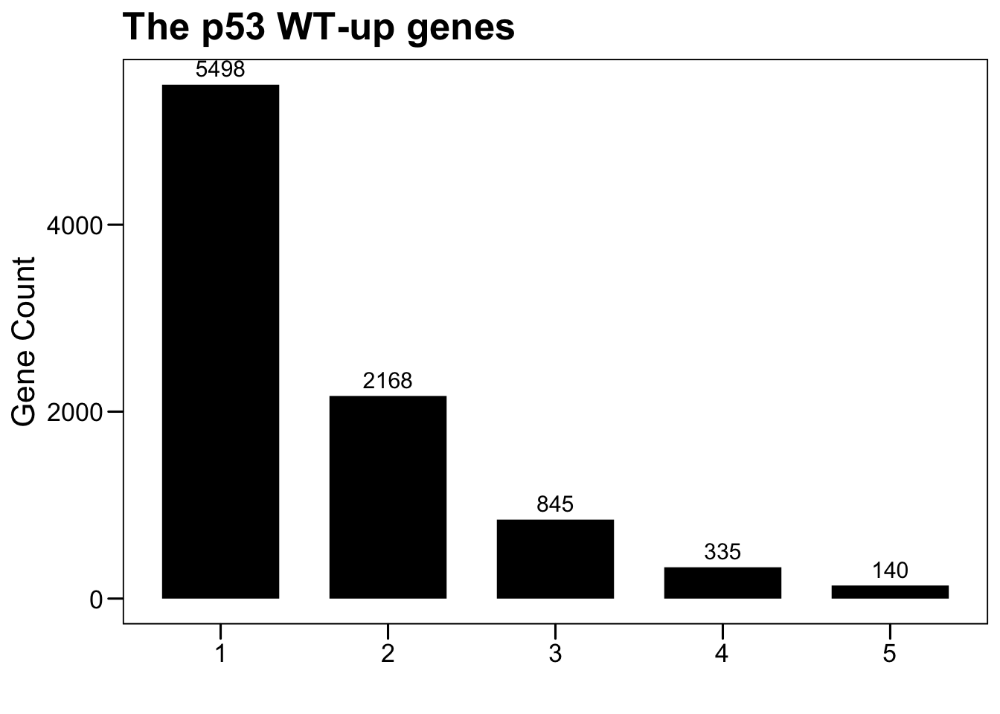
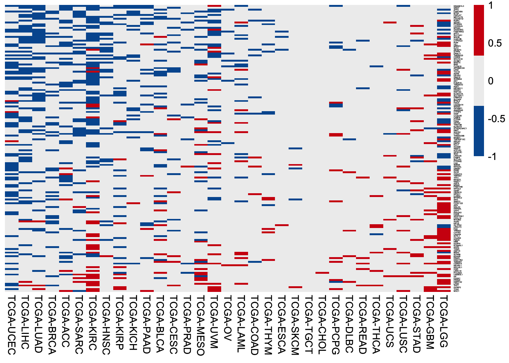

Chapter 6 TCGA PanCanAtlas

p53 signature genes were defined as followed.
p53 targets: The 116 p53 targets.
WT-up gene: in at least five cohorts, expression of this gene in the samples harboring wild-type p53 is significantly higher than expression of this gene in the samples harboring highly frequent p53 mutations (Significance: fold change > 1.5 & adjust P < 0.05; highly frequent mutations are the ones reliably inactivate p53 wild-type functions: the missense/frameshift/insertion/deletion/stop-gain/splicing mutations with > 0.5% frequency).
MUT-up gene: in at least five cohorts, expression of this gene in the samples harboring highly frequent p53 missense mutations is significantly higher than expression of this gene in the samples harboring wild-type p53 (Significance: fold change > 1.5 & adjust P < 0.05; highly frequent missense mutations are the ones most likely possessing of GOF: the missense mutations with > 0.5% frequency).
6.1 WT-up genes
# DEGs between p53 mut (top mutations) and p53 wt
enroll.data <- tcga.mutation.tp53[tcga.mutation.tp53$Amino_Acid_Change %in% tp53.mut.topall$Mutation, ]
total.deg <- NULL
for (kkk in 1:length(TCGA.ALL)) {
pdata <- tcga.meta
sum(pdata$sample != colnames(tcga.fpkm))
pdata$contrast <- "other"
pdata$contrast[which(pdata$TP53mut == "Yes" & pdata$project_id == TCGA.ALL[kkk] & pdata$sample %in% enroll.data$Sample_ID)] <- "c2"
pdata$contrast[which(pdata$TP53mut == "No" & pdata$project_id == TCGA.ALL[kkk] & pdata$WithMutation == "Yes")] <- "c1"
message(kkk, " ", TCGA.ALL[kkk], " ", sum(pdata$contrast %in% c("c1")), " ", sum(pdata$contrast %in% c("c2")) )
if (length(unique(pdata$contrast)) == 3 & sum(table(pdata$contrast) < 1) == 0 ) {
pdata.sub <- pdata[which(pdata$contrast != "other"), ]
design <- model.matrix(~ 0 + as.factor(contrast), data = pdata.sub)
colnames(design) <- str_replace_all(colnames(design), fixed("as.factor(contrast)"), "")
contrast <- makeContrasts(c1_c2 = c1 - c2, levels = design)
fits <- contrasts.fit(fit, contrast)
ebFit <- eBayes(fits)
deg_sig_list <- topTable(ebFit, coef = 1, adjust.method = 'fdr', number = Inf)
deg.data <- deg_sig_list[which(!is.na(deg_sig_list$P.Value)), ]
deg.data$logP <- -log10(deg.data$P.Value)
deg.data$logFDR <- -log10(deg.data$adj.P.Val)
deg.data$group = "zz"
deg.data$group[which( (deg.data$adj.P.Val < 0.05) & (deg.data$logFC > 0.58) )] = "up"
deg.data$group[which( (deg.data$adj.P.Val < 0.05) & (deg.data$logFC < -0.58) )] = "down"
deg.data$tag <- paste0("TP53 wt -vs- mut")
deg.data$Gene <- rownames(deg.data)
deg.data$Cohort <- TCGA.ALL[kkk]
deg.data <- deg.data[which(deg.data$group != "zz"), ]
total.deg <- rbind(total.deg, deg.data)
}
total.deg$Cohort <- factor(as.character(total.deg$Cohort), levels = TCGA.ALL)
saveRDS(total.deg, "02.tcga/degs_tp53_wtup_top.rds")total.deg.wtup <- readRDS("02.tcga/degs_tp53_wtup_top.rds")
tp53.wtup.top <- table(total.deg.wtup[, c("Gene","Cohort")])
tp53.wtup.top <- tp53.wtup.top[order(rowSums(tp53.wtup.top), decreasing = T), ]
dim(tp53.wtup.top)## [1] 5694 33plot.data <- NULL
for (i in 1:5) {
sub <- data.frame(Var1 = i, Freq = sum(rowSums(tp53.wtup.top) >= i))
plot.data <- rbind(plot.data, sub)
}
p <- ggbarplot(plot.data, x = "Var1", y = "Freq",
color = "black", fill = "black", size = 0,
label = TRUE, lab.pos = c("out"), lab.size = 4,
lab.vjust = -0.5,
lab.hjust = 0.5,
main = "The p53 WT-up genes",
xlab = "", ylab = "Gene Count")
p <- p + theme_base() + theme(plot.background = element_blank())
p
gene.tp53.wtup.top <- row.names(tp53.wtup.top[rowSums(tp53.wtup.top) >= 5, ])
length(gene.tp53.wtup.top)## [1] 1576.2 MUT-up genes
# DEGs between p53 mut (top missense mutations) and p53 wt
enroll.data <- tcga.mutation.tp53[tcga.mutation.tp53$Amino_Acid_Change %in% tp53.mut.topmis$Mutation, ]
table(enroll.data$Class)
total.deg <- NULL
for (kkk in 1:length(TCGA.ALL)) {
pdata <- tcga.meta
sum(pdata$sample != colnames(tcga.fpkm))
pdata$contrast <- "other"
pdata$contrast[which(pdata$TP53mut == "Yes" & pdata$project_id == TCGA.ALL[kkk] & pdata$sample %in% enroll.data$Sample_ID)] <- "c1"
pdata$contrast[which(pdata$TP53mut == "No" & pdata$project_id == TCGA.ALL[kkk] & pdata$WithMutation == "Yes")] <- "c2"
message(kkk, " ", TCGA.ALL[kkk], " ", sum(pdata$contrast %in% c("c1")), " ", sum(pdata$contrast %in% c("c2")) )
if (length(unique(pdata$contrast)) == 3 & sum(table(pdata$contrast) < 1) == 0 ) {
pdata.sub <- pdata[which(pdata$contrast != "other"), ]
design <- model.matrix(~ 0 + as.factor(contrast), data = pdata.sub)
colnames(design) <- str_replace_all(colnames(design), fixed("as.factor(contrast)"), "")
contrast <- makeContrasts(c1_c2 = c1 - c2, levels = design)
fits <- contrasts.fit(fit, contrast)
ebFit <- eBayes(fits)
deg_sig_list <- topTable(ebFit, coef = 1, adjust.method = 'fdr', number = Inf)
deg.data <- deg_sig_list[which(!is.na(deg_sig_list$P.Value)), ]
deg.data$logP <- -log10(deg.data$P.Value)
deg.data$logFDR <- -log10(deg.data$adj.P.Val)
deg.data$group = "zz"
deg.data$group[which( (deg.data$adj.P.Val < 0.05) & (deg.data$logFC > 0.58) )] = "up"
deg.data$group[which( (deg.data$adj.P.Val < 0.05) & (deg.data$logFC < -0.58) )] = "down"
deg.data$tag <- paste0("TP53 mut -vs- wt")
deg.data$Gene <- rownames(deg.data)
deg.data$Cohort <- TCGA.ALL[kkk]
deg.data <- deg.data[which(deg.data$group != "zz"), ]
total.deg <- rbind(total.deg, deg.data)
}
total.deg$Cohort <- factor(as.character(total.deg$Cohort), levels = TCGA.ALL)
saveRDS(total.deg, "02.tcga/degs_tp53_mutup_top.rds")total.deg.mutup <- readRDS("02.tcga/degs_tp53_misup_top.rds")
tp53.mutup.top <- table(total.deg.mutup[, c("Gene","Cohort")])
tp53.mutup.top <- tp53.mutup.top[order(rowSums(tp53.mutup.top), decreasing = T), ]
dim(tp53.mutup.top)## [1] 5498 33plot.data <- NULL
for (i in 1:5) {
sub <- data.frame(Var1 = i, Freq = sum(rowSums(tp53.mutup.top) >= i))
plot.data <- rbind(plot.data, sub)
}
p <- ggbarplot(plot.data, x = "Var1", y = "Freq",
color = "black", fill = "black", size = 0,
label = TRUE, lab.pos = c("out"), lab.size = 4,
lab.vjust = -0.5,
lab.hjust = 0.5,
main = "The p53 WT-up genes",
xlab = "", ylab = "Gene Count")
p <- p + theme_base() + theme(plot.background = element_blank())
p
gene.tp53.mutup.top <- row.names(tp53.mutup.top[rowSums(tp53.mutup.top) >= 5, ])
length(gene.tp53.mutup.top)## [1] 1406.3 HR of high expression
HR of high expression of p53 signature genes among TCGA cancer types.
6.3.1 116 p53 targets
HR of high expression of the 116 p53 targets among 33 TCGA cancer cohorts. In each cohort, patients are separated by the median value of gene expression, followed by HR values calculation using the univariable Cox regression analysis.
TCGA.ALL <- c("TCGA-OV","TCGA-UCS","TCGA-LUSC","TCGA-ESCA","TCGA-READ","TCGA-HNSC","TCGA-PAAD","TCGA-COAD","TCGA-LUAD","TCGA-BLCA","TCGA-STAD","TCGA-LGG","TCGA-UCEC","TCGA-SARC","TCGA-BRCA","TCGA-GBM","TCGA-LIHC","TCGA-KICH","TCGA-ACC","TCGA-MESO","TCGA-DLBC","TCGA-PRAD","TCGA-CHOL","TCGA-SKCM","TCGA-CESC","TCGA-LAML","TCGA-THYM","TCGA-KIRC","TCGA-KIRP","TCGA-TGCT","TCGA-THCA","TCGA-PCPG","TCGA-UVM")
plot.data <- read.xlsx("02.tcga/Table6.xlsx", sheet = 1, startRow = 2)
plot.data <- plot.data[, 1:7]
plot.data <- plot.data[which(!is.na(plot.data$TCGA.Cohort)), ]
gene.list <- unique(plot.data$p53.targets)
length(gene.list)## [1] 116plot.mat <- matrix(0, nrow = length(gene.list), ncol = length(TCGA.ALL))
rownames(plot.mat) <- gene.list
colnames(plot.mat) <- TCGA.ALL
plot.mat.hr <- plot.mat
for (i in 1:ncol(plot.mat)) {
sub <- plot.data[which(plot.data$TCGA.Cohort == colnames(plot.mat)[i]), ]
sub <- sub[which(sub$P.value < 0.05), ]
plot.mat.hr[match(sub$p53.targets, rownames(plot.mat.hr)), i] <- log2(sub$HR)
sub.1 <- sub[which(sub$P.value < 0.05 & sub$HR > 1), ]
if (nrow(sub.1) > 0) plot.mat[match(sub.1$p53.targets, rownames(plot.mat)), i] <- 1
sub.2 <- sub[which(sub$P.value < 0.05 & sub$HR < 1), ]
if (nrow(sub.2) > 0) plot.mat[match(sub.2$p53.targets, rownames(plot.mat)), i] <- -1
}
stat.gene <- data.frame(Gene = rownames(plot.mat),
SigCount = rowSums(plot.mat == -1) - rowSums(plot.mat == 1),
SigHR = rowMeans(plot.mat.hr * -1) )
stat.gene <- stat.gene[order(stat.gene$SigCount, stat.gene$SigHR, decreasing = T), ]
stat.cohort <- data.frame(Cohort = colnames(plot.mat),
SigCount = colSums(plot.mat == -1) - colSums(plot.mat == 1),
SigHR = colMeans(plot.mat.hr * -1) )
stat.cohort <- stat.cohort[order(stat.cohort$SigCount, stat.cohort$SigHR, decreasing = T), ]
p <- pheatmap(plot.mat[stat.gene$Gene, stat.cohort$Cohort], scale = "none",
color = colorRampPalette(c("#00599F","#EEEEEE","#D01910"))(3),
cluster_row = F, cluster_col = F, border_color = NA,
fontsize_col = 10,
fontsize_row = 2)
p
6.3.2 WT-up genes
HR of high expression of the 157 WT-up genes among 33 TCGA cancer cohorts. In each cohort, patients are separated by the median value of gene expression, followed by HR values calculation using the univariable Cox regression analysis.
plot.data <- read.xlsx("02.tcga/Table6.xlsx", sheet = 1, startRow = 2)
plot.data <- plot.data[, 8:14]
plot.data <- plot.data[which(!is.na(plot.data$TCGA.Cohort)), ]
gene.list <- unique(plot.data$`WT-up.genes`)
length(gene.list)## [1] 157plot.mat <- matrix(0, nrow = length(gene.list), ncol = length(TCGA.ALL))
rownames(plot.mat) <- gene.list
colnames(plot.mat) <- TCGA.ALL
plot.mat.hr <- plot.mat
for (i in 1:ncol(plot.mat)) {
sub <- plot.data[which(plot.data$TCGA.Cohort == colnames(plot.mat)[i]), ]
sub <- sub[which(sub$P.value < 0.05), ]
plot.mat.hr[match(sub$`WT-up.genes`, rownames(plot.mat.hr)), i] <- log2(sub$HR)
sub.1 <- sub[which(sub$P.value < 0.05 & sub$HR > 1), ]
if (nrow(sub.1) > 0) plot.mat[match(sub.1$`WT-up.genes`, rownames(plot.mat)), i] <- 1
sub.2 <- sub[which(sub$P.value < 0.05 & sub$HR < 1), ]
if (nrow(sub.2) > 0) plot.mat[match(sub.2$`WT-up.genes`, rownames(plot.mat)), i] <- -1
}
stat.gene <- data.frame(Gene = rownames(plot.mat),
SigCount = rowSums(plot.mat == -1) - rowSums(plot.mat == 1),
SigHR = rowMeans(plot.mat.hr * -1) )
stat.gene <- stat.gene[order(stat.gene$SigCount, stat.gene$SigHR, decreasing = T), ]
stat.cohort <- data.frame(Cohort = colnames(plot.mat),
SigCount = colSums(plot.mat == -1) - colSums(plot.mat == 1),
SigHR = colMeans(plot.mat.hr * -1) )
stat.cohort <- stat.cohort[order(stat.cohort$SigCount, stat.cohort$SigHR, decreasing = T), ]
p <- pheatmap(plot.mat[stat.gene$Gene, stat.cohort$Cohort], scale = "none",
color = colorRampPalette(c("#00599F","#EEEEEE","#D01910"))(3),
cluster_row = F, cluster_col = F, border_color = NA,
fontsize_col = 10,
fontsize_row = 2)
p
6.3.3 MUT-up genes
HR of high expression of the 140 MUT-up genes among 33 TCGA cancer cohorts. In each cohort, patients are separated by the median value of gene expression, followed by HR values calculation using the univariable Cox regression analysis.
plot.data <- read.xlsx("02.tcga/Table6.xlsx", sheet = 1, startRow = 2)
plot.data <- plot.data[, 15:21]
plot.data <- plot.data[which(!is.na(plot.data$TCGA.Cohort)), ]
gene.list <- unique(plot.data$`MUT-up.genes`)
length(gene.list)## [1] 140plot.mat <- matrix(0, nrow = length(gene.list), ncol = length(TCGA.ALL))
rownames(plot.mat) <- gene.list
colnames(plot.mat) <- TCGA.ALL
plot.mat.hr <- plot.mat
for (i in 1:ncol(plot.mat)) {
sub <- plot.data[which(plot.data$TCGA.Cohort == colnames(plot.mat)[i]), ]
sub <- sub[which(sub$P.value < 0.05), ]
plot.mat.hr[match(sub$`MUT-up.genes`, rownames(plot.mat.hr)), i] <- log2(sub$HR)
sub.1 <- sub[which(sub$P.value < 0.05 & sub$HR > 1), ]
if (nrow(sub.1) > 0) plot.mat[match(sub.1$`MUT-up.genes`, rownames(plot.mat)), i] <- 1
sub.2 <- sub[which(sub$P.value < 0.05 & sub$HR < 1), ]
if (nrow(sub.2) > 0) plot.mat[match(sub.2$`MUT-up.genes`, rownames(plot.mat)), i] <- -1
}
stat.gene <- data.frame(Gene = rownames(plot.mat),
SigCount = rowSums(plot.mat == 1) - rowSums(plot.mat == -1),
SigHR = rowMeans(plot.mat.hr * 1) )
stat.gene <- stat.gene[order(stat.gene$SigCount, stat.gene$SigHR, decreasing = T), ]
stat.cohort <- data.frame(Cohort = colnames(plot.mat),
SigCount = colSums(plot.mat == 1) - colSums(plot.mat == -1),
SigHR = colMeans(plot.mat.hr * 1) )
stat.cohort <- stat.cohort[order(stat.cohort$SigCount, stat.cohort$SigHR, decreasing = T), ]
p <- pheatmap(plot.mat[stat.gene$Gene, stat.cohort$Cohort], scale = "none",
color = colorRampPalette(c("#00599F","#EEEEEE","#D01910"))(3),
cluster_row = F, cluster_col = F, border_color = NA,
fontsize_col = 10,
fontsize_row = 2)
p6.4 Powerfulness in regulating
Heatmap of fold changes of expression of the p53 signature genes between p53-wild-type and p53-mutant tumors in the TCGA Pan-Cancer Atlas.
6.4.1 116 p53 targets
Heatmap of fold changes of expression of the 116 reported p53 target genes between samples with wild-type p53 and samples with frequent mutant p53 (> 0.5% mutation frequency). Note the p53 mutants with > 0.5% mutation frequency are the ones most likely losing wild-type functions.
TCGA.ALL <- c("TCGA-OV","TCGA-UCS","TCGA-LUSC","TCGA-ESCA","TCGA-READ","TCGA-HNSC","TCGA-PAAD","TCGA-COAD","TCGA-LUAD","TCGA-BLCA","TCGA-STAD","TCGA-LGG","TCGA-UCEC","TCGA-SARC","TCGA-BRCA","TCGA-GBM","TCGA-LIHC","TCGA-KICH","TCGA-ACC","TCGA-MESO","TCGA-DLBC","TCGA-PRAD","TCGA-CHOL","TCGA-SKCM","TCGA-CESC","TCGA-LAML","TCGA-THYM","TCGA-KIRC","TCGA-KIRP","TCGA-TGCT","TCGA-THCA","TCGA-PCPG","TCGA-UVM")
plot.data <- read.xlsx("02.tcga/Table7.xlsx", sheet = 1, startRow = 2)
plot.data <- plot.data[, 1:6]
plot.data <- plot.data[which(!is.na(plot.data$TCGA.Cohort)), ]
gene.list <- unique(plot.data$p53.targets)
length(gene.list)## [1] 116plot.mat <- matrix(NA, nrow = length(gene.list), ncol = length(TCGA.ALL))
rownames(plot.mat) <- gene.list
colnames(plot.mat) <- TCGA.ALL
for (i in 1:ncol(plot.mat)) {
sub <- plot.data[which(plot.data$TCGA.Cohort == colnames(plot.mat)[i]), ]
if (nrow(sub) > 0) {
plot.mat[, i] <- 0
sub.1 <- sub[which(sub$log2FC > 0), ]
if (nrow(sub.1) > 0) plot.mat[sub.1$p53.targets, i] <- 1
sub.2 <- sub[which(sub$log2FC > 0.58 & sub$adj.P.Val < 0.05), ]
if (nrow(sub.2) > 0) plot.mat[sub.2$p53.targets, i] <- 2
}
}
stat.cohort <- data.frame(Cohort = colnames(plot.mat),
SigCount = colSums(plot.mat == 2),
NotSigCount = colSums(plot.mat == 1) )
stat.cohort <- stat.cohort[order(stat.cohort$SigCount, stat.cohort$NotSigCount, decreasing = T), ]
plot.mat <- plot.mat[, stat.cohort$Cohort]
p <- pheatmap(plot.mat, scale = "none",
color = colorRampPalette(c("#fffef3","#edd1ff","#984ac9"))(501),
cluster_row = F, cluster_col = F, border_color = NA,
clustering_method = "ward.D2",
display_numbers = FALSE,
number_format = "%.f", number_color = "black",
clustering_distance_rows = "manhattan",
clustering_distance_cols = "manhattan",
fontsize_col = 10,
fontsize_row = 1)
p
6.4.2 WT-up genes
Heatmap of fold changes of expression of the 157 WT-up genes between samples with wild-type p53 and samples with frequent mutant p53 (> 0.5% mutation frequency). Note the p53 mutants with > 0.5% mutation frequency are the ones most likely losing wild-type functions.
plot.data <- read.xlsx("02.tcga/Table7.xlsx", sheet = 1, startRow = 2)
plot.data <- plot.data[, 7:12]
plot.data <- plot.data[which(!is.na(plot.data$TCGA.Cohort)), ]
gene.list <- unique(plot.data$`WT-up.genes`)
length(gene.list)## [1] 157plot.mat <- matrix(NA, nrow = length(gene.list), ncol = length(TCGA.ALL))
rownames(plot.mat) <- gene.list
colnames(plot.mat) <- TCGA.ALL
for (i in 1:ncol(plot.mat)) {
sub <- plot.data[which(plot.data$TCGA.Cohort == colnames(plot.mat)[i]), ]
if (nrow(sub) > 0) {
plot.mat[, i] <- 0
sub.1 <- sub[which(sub$log2FC > 0), ]
if (nrow(sub.1) > 0) plot.mat[sub.1$`WT-up.genes`, i] <- 1
sub.2 <- sub[which(sub$log2FC > 0.58 & sub$adj.P.Val < 0.05), ]
if (nrow(sub.2) > 0) plot.mat[sub.2$`WT-up.genes`, i] <- 2
}
}
stat.cohort <- data.frame(Cohort = colnames(plot.mat),
SigCount = colSums(plot.mat == 2),
NotSigCount = colSums(plot.mat == 1) )
stat.cohort <- stat.cohort[order(stat.cohort$SigCount, stat.cohort$NotSigCount, decreasing = T), ]
plot.mat <- plot.mat[, stat.cohort$Cohort]
p <- pheatmap(plot.mat, scale = "none",
color = colorRampPalette(c("#fffef3","#edd1ff","#984ac9"))(501),
cluster_row = F, cluster_col = F, border_color = NA,
clustering_method = "ward.D2",
display_numbers = FALSE,
number_format = "%.f", number_color = "black",
clustering_distance_rows = "manhattan",
clustering_distance_cols = "manhattan",
fontsize_col = 10,
fontsize_row = 1)
p
6.4.3 MUT-up genes
Heatmap of fold changes of expression of the 140 MUT-up genes between samples with frequent missense mutant p53 (> 0.5% mutation frequency) and samples with wild-type p53. Note the frequent missense mutant p53 with > 0.5% mutation frequency are the ones most likely possessing of GOF.
plot.data <- read.xlsx("02.tcga/Table7.xlsx", sheet = 1, startRow = 2)
plot.data <- plot.data[, 13:18]
plot.data <- plot.data[which(!is.na(plot.data$TCGA.Cohort)), ]
gene.list <- unique(plot.data$`MUT-up.genes`)
length(gene.list)## [1] 140plot.mat <- matrix(NA, nrow = length(gene.list), ncol = length(TCGA.ALL))
rownames(plot.mat) <- gene.list
colnames(plot.mat) <- TCGA.ALL
for (i in 1:ncol(plot.mat)) {
sub <- plot.data[which(plot.data$TCGA.Cohort == colnames(plot.mat)[i]), ]
if (nrow(sub) > 0) {
plot.mat[, i] <- 0
sub.1 <- sub[which(sub$log2FC > 0), ]
if (nrow(sub.1) > 0) plot.mat[sub.1$`MUT-up.genes`, i] <- 1
sub.2 <- sub[which(sub$log2FC > 0.58 & sub$adj.P.Val < 0.05), ]
if (nrow(sub.2) > 0) plot.mat[sub.2$`MUT-up.genes`, i] <- 2
}
}
stat.cohort <- data.frame(Cohort = colnames(plot.mat),
SigCount = colSums(plot.mat == 2),
NotSigCount = colSums(plot.mat == 1) )
stat.cohort <- stat.cohort[order(stat.cohort$SigCount, stat.cohort$NotSigCount, decreasing = T), ]
plot.mat <- plot.mat[, stat.cohort$Cohort]
p <- pheatmap(plot.mat, scale = "none",
color = colorRampPalette(c("#fffef3","#edd1ff","#984ac9"))(501),
cluster_row = F, cluster_col = F, border_color = NA,
clustering_method = "ward.D2",
display_numbers = FALSE,
number_format = "%.f", number_color = "black",
clustering_distance_rows = "manhattan",
clustering_distance_cols = "manhattan",
fontsize_col = 10,
fontsize_row = 1)
p6.5 HR for p53 mutations
HR for p53 mutations in 33 TCGA cancer types.
tcga.meta <- read.xlsx("02.tcga/Table5.xlsx", sheet = 1, startRow = 2)
plot.data <- tcga.meta[, 1:10]
plot.data <- plot.data[which(plot.data$With.survival.data == 1 & plot.data$Sample.type == "Primary Tumor" & plot.data$MutationReported == "Yes"), ]
table(plot.data$TCGA.cohort[which(plot.data$p53mut == "Yes")]) %>% sort(decreasing = T)## integer(0)# select p53 mutated samples > 5
TCGA.OS <- c("TCGA-KICH","TCGA-KIRC","TCGA-ACC","TCGA-LAML","TCGA-UCEC","TCGA-PAAD","TCGA-LIHC","TCGA-BRCA","TCGA-HNSC","TCGA-LUAD","TCGA-KIRP","TCGA-PRAD","TCGA-CESC","TCGA-ESCA","TCGA-COAD","TCGA-BLCA","TCGA-SARC","TCGA-STAD","TCGA-OV","TCGA-MESO","TCGA-READ","TCGA-LUSC","TCGA-SKCM","TCGA-UCS","TCGA-GBM","TCGA-LGG")
plot.data$OS_month_5y <- plot.data$`OS.month.(5.years)`
plot.data$OS_status_5y <- plot.data$`OS.status.(5.years)`
plot.data$p53mut <- plot.data$`p53-mut`
total.list <- list()
out.data <- NULL
for (j in 1:length(TCGA.OS)) {
sub <- plot.data[which(plot.data$TCGA.cohort == TCGA.OS[j]), ]
if (length(unique(sub$p53mut)) > 1) {
fit <- coxph(Surv(OS_month_5y, OS_status_5y) ~ p53mut, data = sub)
fit.info <- summary(fit)
sub.p <- survdiff(Surv(OS_month_5y, OS_status_5y) ~ p53mut, data = sub)$pvalue
fit.info.out <- c("p53", TCGA.OS[j], fit.info$conf.int[1],
fit.info$conf.int[3], fit.info$conf.int[4], sub.p )
out.data <- rbind(out.data, fit.info.out)
}
fit <- survfit(Surv(OS_month_5y, OS_status_5y) ~ p53mut, data = sub)
p <- ggsurvplot(fit, data = sub,
xlab = 'Time (Months)',
pval = TRUE,
risk.table = FALSE,
risk.table.height = 0.28,
conf.int.alpha = 0.05,
conf.int = TRUE, surv.median.line = 'hv',
palette = c("blue","red"),
axes.offset = TRUE,
break.time.by = 12, xlim = c(0, 60),
title= TCGA.OS[j] )
total.list <- c(total.list, list(p = p))
}## Warning in .add_surv_median(p, fit, type = surv.median.line, fun = fun, : Median survival not reached.
## Warning in .add_surv_median(p, fit, type = surv.median.line, fun = fun, : Median survival not reached.
## Warning in .add_surv_median(p, fit, type = surv.median.line, fun = fun, : Median survival not reached.
## Warning in .add_surv_median(p, fit, type = surv.median.line, fun = fun, : Median survival not reached.
## Warning in .add_surv_median(p, fit, type = surv.median.line, fun = fun, : Median survival not reached.
## Warning in .add_surv_median(p, fit, type = surv.median.line, fun = fun, : Median survival not reached.
## Warning in .add_surv_median(p, fit, type = surv.median.line, fun = fun, : Median survival not reached.
## Warning in .add_surv_median(p, fit, type = surv.median.line, fun = fun, : Median survival not reached.names(total.list) <- TCGA.OS
out.data <- as.data.frame(out.data)
colnames(out.data) <- c("Gene", "Cohort", "HR", "low.95", "high.95", "P.value")
for (i in 3:6) {out.data[, i] <- as.numeric(as.character(out.data[, i]))}
out.data$Prognosis <- "Others"
out.data$Prognosis[which(out.data$HR > 1 & out.data$P.value < 0.05)] <- "Unfavourable"
out.data$Prognosis[which(out.data$HR < 1 & out.data$P.value < 0.05)] <- "Favourable"
rownames(out.data) <- NULL
print(out.data)
p <- arrange_ggsurvplots(total.list, ncol = 7, nrow = 4, print = FALSE)
p
6.6 MDM2 expression
Boxplot of MDM2 gene expression in TCGA Pan-Cancer Atlas. Fragments Per Kilobase of transcript per Million mapped reads (FPKM) is used for evaluating gene expression.
tcga.meta <- read.xlsx("02.tcga/Table8.xlsx", sheet = 1, startRow = 2)
plot.order <- aggregate(tcga.meta$MDM2.expression, list(Cohort = tcga.meta$TCGA.cohort), median)
plot.order <- plot.order[order(plot.order$x, decreasing = F), ]
rownames(plot.order) <- NULL
plot.order
p <- ggboxplot(tcga.meta,
x = "TCGA.cohort", y = "MDM2.expression",
color = "black", fill = "#b2ebff",
size = 0.5, width = 0.7,
xlab = "", ylab = "MDM2 expression",
order = plot.order$Cohort,
main = "MDM2",
outlier.shape = NA,
outlier.size = 1,
legend = "bottom")
p <- p + theme_base() + theme(plot.background = element_blank())
p <- p + theme(axis.text.x = element_text(angle = 90,hjust = 1,vjust = 0.5))
p6.6.1 Radar plot
Radar plots predicting treatment sensitivity of p53 rescue therapy in the indicated cancer types
tcga.rank <- read.xlsx("02.tcga/Table9.xlsx", sheet = 1, startRow = 2)
tcga.rank$CohortSim <- str_replace_all(tcga.rank$Cohort, "TCGA-", "")
idx <- c("Rank.(HR.of.high.expression.of.p53.targets);.data.derived.from.S1K",
"Rank.(HR.of.high.expression.of.WT-up.genes);.data.derived.from.S1K",
"Rank.(HR.of.high.expression.of.MUT-up.genes);.data.derived.from.S1K",
"Rank.(HR.of.p53-mut);.data.derived.from.S1M",
"Rank.(MDM2.expression);.data.derived.from.S1N",
"Rank.(Powerfulness.in.regulating.MUT-up.genes);.data.derived.from.S1L",
"Rank.(Powerfulness.in.regulating.WT-up.genes);.data.derived.from.S1L",
"Rank.(Powerfulness.in.regulating.p53.targets);.data.derived.from.S1L" )
idx[!idx %in% colnames(tcga.rank)]## character(0)par(mfrow = c(7, 5))
for (kkk in 1:nrow(tcga.rank)) {
plot.mat <- tcga.rank[kkk, idx ]
plot.mat <- rbind(rep(33, length(plot.mat)), rep(0, length(plot.mat)), plot.mat)
colnames(plot.mat) <- c("HR.targets","HR.WT-up","HR.MUT-up","HR.p53","MDM2","power.MUT-up","power.WT-up","power.targets")
radarchart(as.data.frame(plot.mat),
pcol = c( "#dd0000"),
pfcol = scales::alpha(c("#f28926"),0.5),
plwd = 2, plty = 1, axistype = 1,
caxislabels = seq(0, 33, 11), seg = 3,
cglcol = "grey", cglty = 1, cglwd = 0.8, axislabcol = "black",
vlcex = 1.1, pangle=c(10, 45, 120) )
title(paste0(tcga.rank$CohortSim[kkk], " (", tcga.rank$Total.score[kkk], ")") )
}